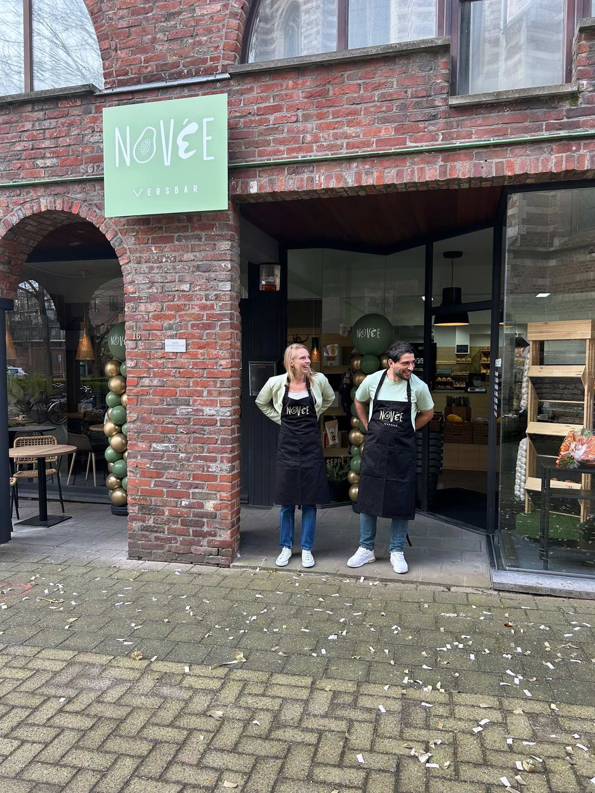

Vers uit het hart van Kontich
Bij Novée Versbar geloven we dat lekker eten en gezond eten hand in hand gaan. Onze versbar op het Gemeenteplein in Kontich is de plek waar je elke dag terechtkunt voor een voedzaam ontbijt, een heerlijke lunch of gewoon een goed kopje koffie.
We werken dagelijks met de beste seizoensproducten en maken alles zo vers mogelijk klaar — van onze handgemaakte bowls tot de huisbereide confituur op je brood. Geen ingewikkeld verhaal, gewoon: vers, eerlijk en smaakvol.
Of je nu langskomt voor een snelle koffie, een uitgebreid ontbijt of een volle lunchbowl — bij Novée ben je altijd welkom.
Wat ons drijft
Versheid voorop
Elke dag starten we opnieuw met verse producten. Niets staat langer dan nodig op de plank.
Warm welkom
We kennen onze vaste klanten en heten elke nieuwe bezoeker hartelijk welkom. Novée is meer dan een zaak — het is een buurtplek.
Bewust & duurzaam
We kiezen bewust voor kwaliteitsvolle, lokale ingrediënten en dragen zorg voor de omgeving.
Adres & Openingsuren
We staan klaar op het Gemeenteplein in Kontich — vlak in het hart van het dorp.
Gemeenteplein 15
2550 Kontich, België
| Maandag | Gesloten |
| Dinsdag | 08:30 – 17:00 |
| Woensdag | 08:30 – 17:00 |
| Donderdag | 08:30 – 17:00 |
| Vrijdag | 08:30 – 17:00 |
| Zaterdag | 09:00 – 17:00 |
| Zondag | 09:00 – 13:00 |
* Op zondag eerder gesloten (tot 13:00)
Heb je allergieën of intoleranties? We maken heel graag iets lekkers op jouw vraag. Spreek ons gerust aan — we denken graag mee!